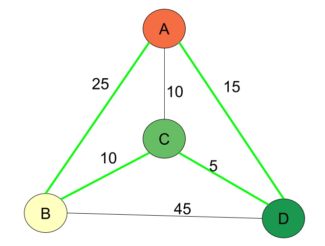

|  |
TSP
El Problema del Viajante de Comercio (TSP, por sus siglas en inglés) es un desafío matemático y de optimización que busca encontrar la ruta más corta posible para que un viajante visite un conjunto de ciudades y regrese a su punto de partida. En este problema, se supone que el viajante debe visitar cada ciudad exactamente una vez.
El objetivo es minimizar la distancia total recorrida, lo que implica encontrar el recorrido óptimo que pase por todas las ciudades sin repetir ninguna, minimizando la distancia total recorrida.
El TSP tiene importantes aplicaciones en logística, planificación de rutas, diseño de circuitos integrados, programación de producción y muchas otras áreas donde la optimización de la secuencia de visitas es fundamental.
El problema es conocido por ser NP-duro, lo que significa que no se ha encontrado una solución eficiente que funcione en todos los casos. Sin embargo, existen algoritmos y técnicas heurísticas que pueden proporcionar soluciones aproximadas de buena calidad para casos prácticos.
Resolver el TSP es de gran interés debido a su complejidad y aplicaciones prácticas, y ha sido objeto de estudio e investigación durante décadas.
Interpretación de los resultados
En este caso el número de variables que se generan en todos los métodos es el mismo. Se genera uno por cada combinación de nodo y posición que puede haber. Esto se puede visualizar mejor con este ejemplo de 4 nodos
x0: 1, x1: 0, x2: 0, x3: 0, x4: 0, x5: 0, x6: 0, x7: 1, x8: 0, x9: 1, x10: 0, x11: 0, x12: 0, x13: 0, x14: 1, x15: 0.
En este resultado de ejemplo, se comienza en el primer nodo, por eso la primera variable asociada a él tiene el valor 1 y las otras tres 0, luego se visita el tercero, después el cuarto y por último el segundo.
Formato de los archivos
A continuación se especifica el formato para cargar problemas a través de un archivo .txt. Está compuesto de las siguientes 3 líneas
|